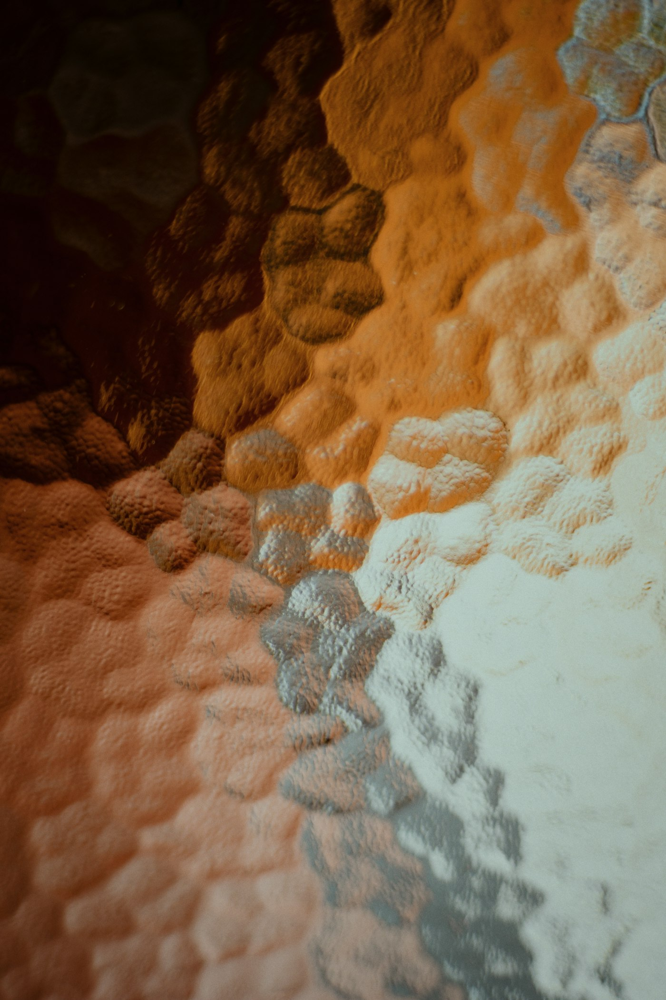
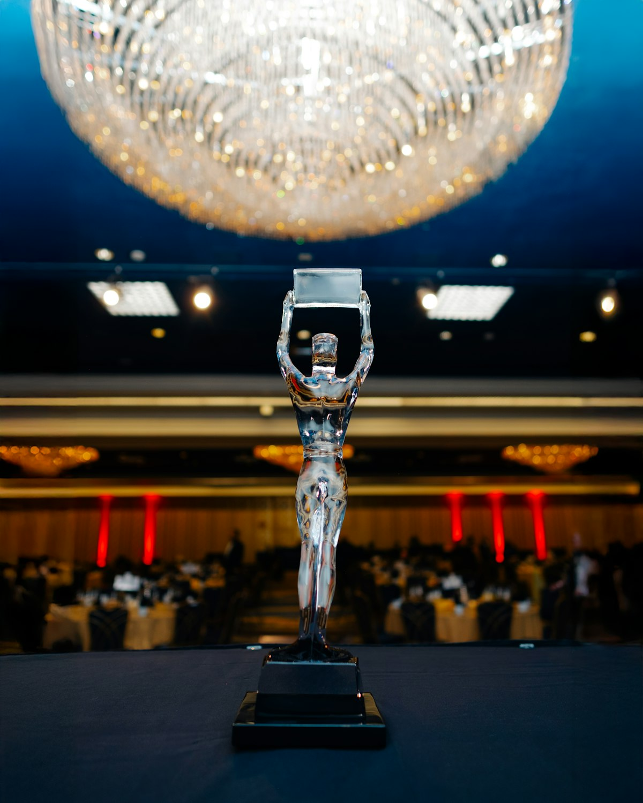
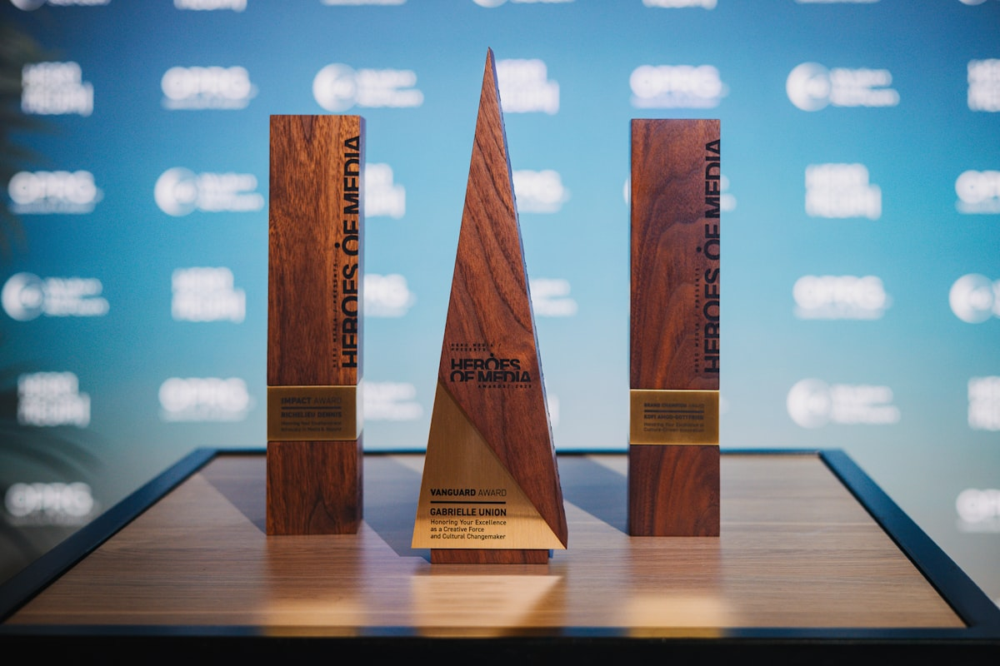

能够从目标、用户、内容、交付四个角度拆解任务，推动作品完成。
Profile
个人简介

我是 Adam White，目前就读于华侨大学。对数字产品、网页设计和信息表达有持续兴趣，习惯用结构化方式整理问题，并通过小项目把想法落地。希望在产品运营、内容策划、前端基础开发或项目助理方向积累更多实践经验。
Highlights
简历亮点
擅长整理资料、撰写说明文档，并把复杂信息转化成清晰页面。
熟悉 Office、基础网页制作、GitHub Pages 部署和轻量级数据整理。
关注简洁版式、视觉层级、留白和细节统一，偏好高级克制的设计。
Education
教育背景
华侨大学
本科阶段学习经历。重点关注通识能力、商业理解、数字工具应用与跨文化沟通。
- 参与课程展示、资料整理和小组汇报，负责内容结构与视觉呈现。
- 持续学习网页基础、产品文档写作和线上作品集搭建。
- 能够使用中英文完成基础沟通、资料阅读与内容整理。
Experience
经历与项目
个人简历网站设计与部署
独立完成静态个人网站的内容结构、视觉风格和 GitHub Pages 部署，页面采用无照片、玻璃卡片、响应式布局。
- 梳理首页、教育、经历、能力和联系模块。
- 使用 HTML、CSS、JavaScript 实现滚动动效与移动端适配。
- 完成 Git 提交、远程仓库推送和 GitHub Pages 发布。
校园活动内容策划
参与校园活动的前期资料整理、流程规划和宣传文案撰写，协助团队把活动信息转化为易理解的展示内容。
- 整理活动目标、时间安排、分工清单和物料需求。
- 优化宣传文字，让标题、说明和报名信息更清晰。
- 协助复盘活动执行过程，总结可改进事项。
课程调研与展示项目
在课程小组项目中负责信息收集、内容框架和展示页面整理，将调研结论压缩成可汇报的视觉结构。
- 收集并筛选公开资料，形成主题提纲。
- 制作演示结构，突出问题、分析和结论。
- 配合团队完成课堂展示与问答准备。
Credentials
证书与荣誉
Office 办公软件应用
熟悉文档排版、表格整理和演示文稿制作，可支持日常学习、汇报和项目协作。
英语资料阅读与基础沟通
能够阅读英文网页、产品说明和课程材料，并完成基础英文邮件与文字表达。

课程展示优秀小组成员
在课程展示中承担内容结构和视觉整理工作，帮助团队提升汇报完成度。
网页设计基础实践
完成个人静态网站搭建，理解页面结构、响应式布局、基础交互和在线部署流程。

校园志愿服务经历
参与校园活动支持与现场协助，具备基础组织意识、服务意识和临场沟通能力。
信息检索与资料整理
能够围绕主题查找公开资料，筛选有效信息，并整理为报告、表格或展示大纲。
Capabilities
能力方向
信息整理
能够从大量资料中提炼重点，形成条理清楚的文档、表格和展示结构。
网页基础
掌握 HTML、CSS 和基础 JavaScript，能够搭建轻量级静态页面并部署上线。
沟通协作
重视反馈、节奏和交付质量，适合在小组项目中承担协调与内容推进工作。
Tools
工具栈
HTML
CSS
JavaScript
GitHub
Office
Canva
Interests
兴趣方向
个人网站
产品体验
内容策划
视觉设计
数字表达
Contact
保持联系
欢迎通过邮件联系我，了解更多学习经历、项目方向或合作机会。